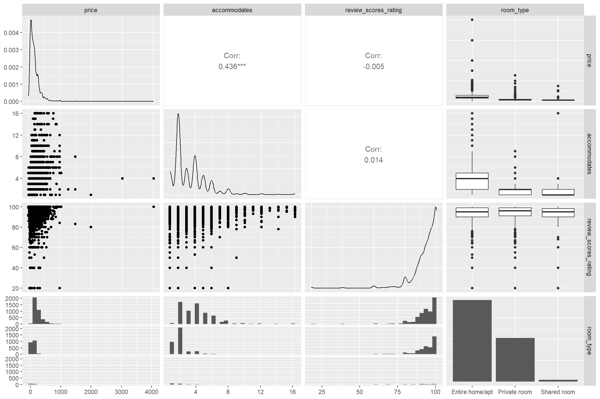
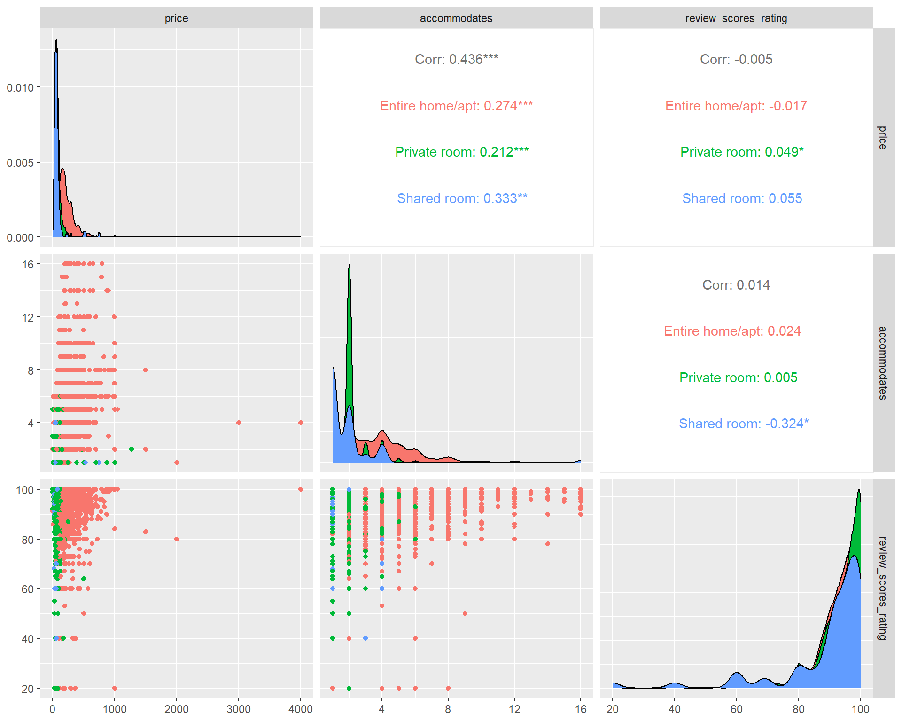

install.packages("GGally")
library(GGally)
#Don't forget to load the tidyverse!
library(tidyverse)Extra - Scatterplot Matrices With GGally
Necessary Packages
What is a Scatterplot Matrix?
A scatterplot matrix arranges multiple scatterplots on a grid so that they are easy to compare to one another. The matrix arrangement allows you to look at many different relationships between multiple variables in a dataset all at once, which can be very useful for exploratory data analysis.
Creating a Scatterplot Matrix
The GGally package provides a function, ggpairs, for creating scatterplot matrices. To get started, download the Boston AirBnB dataset into your data subdirectory and read it in as a dataframe. Use the names function to see what kinds of variables are included.
listings <- read_csv("data/Boston_listings.csv")
names(listings) [1] "id" "listing_url"
[3] "neighbourhood" "neighbourhood_cleansed"
[5] "city" "state"
[7] "zipcode" "latitude"
[9] "longitude" "property_type"
[11] "room_type" "accommodates"
[13] "bathrooms" "bedrooms"
[15] "beds" "bed_type"
[17] "price" "security_deposit"
[19] "cleaning_fee" "guests_included"
[21] "extra_people" "minimum_nights"
[23] "maximum_nights" "number_of_reviews"
[25] "first_review" "last_review"
[27] "review_scores_rating" "review_scores_accuracy"
[29] "review_scores_cleanliness" "review_scores_checkin"
[31] "review_scores_communication" "review_scores_location"
[33] "review_scores_value" "cancellation_policy"
[35] "calculated_host_listings_count" "reviews_per_month" So, which variables do we want to compare? To make the matrix easy to read, we should limit ourselves to four or five variables at a time. We’ll do this using the select function. Then, we’ll create the matrix using ggpairs.
listings %>%
select(price,accommodates,review_scores_rating,room_type) %>%
ggpairs()
As you can see, a ggpairs matrix contains far more than just scatterplots! It will use both scatterplots and correlation coefficients for pairs of continuous variables, but will use other plots to represent mixed types of data. You can customize what types of plots or correlation coefficients ggpairs uses along with other parts of the function by adding arguments to it. See the documentation for more information.
##How to read and interpret the matrix The first thing to notice is the names of our variables which are printed both horizontally along the top and vertically along the right side. The plots in our grid each describe the relationship between the two variables they correspond with. For example:
- The first plot at the top left is price vs. price. For this,
ggpairsgives us a density plot. Note that the scale of the y axis is printed on the left side of our matrix and the scale of the x axis is printed at the very bottom of our matrix. We can see the majority of our rooms are rented for way under $1000 a night. - The second plot at the top is accomodates vs. price. Here, we get a pearson’s correlation coefficient that suggests there is a positive correlation between how many guests a room accomodates and how much that room will cost.
- The third plot at the top is review score vs. price. The coefficient shown here is very close to 0.
- The fourth plot at the top is room type vs. price. The box plot shows that we have some outliers when it comes to prices for entire homes/apartments.
Adding color and other aesthetics
Sometimes we may want to represent variables in other aesthetics than the X and Y axes. We can use the mapping parameter for ggpairs to add color, size and other aesthetics using aes with the same syntax as in ggplot2. Note that in this example, we use the columns parameter of ggpairs to serve the same role as our select function above. Remember: there’s usually more than one way to get the same results in R!
listings %>%
ggpairs(columns = c("price", "accommodates", "review_scores_rating"),
mapping = aes(color = room_type))
Resources
Exercise
Create another scatterplot matrix with the Boston AirBnB dataset and GGally to answer the following questions:
- How are most rooms reviewed on cleanliness?
- Do higher priced rooms get better cleanliness scores?
- Do higher priced rooms get more reviews per month?
- Which room type has the highest average number of reviews per month?
Try adding at least one variable as a color or other aesthetic.